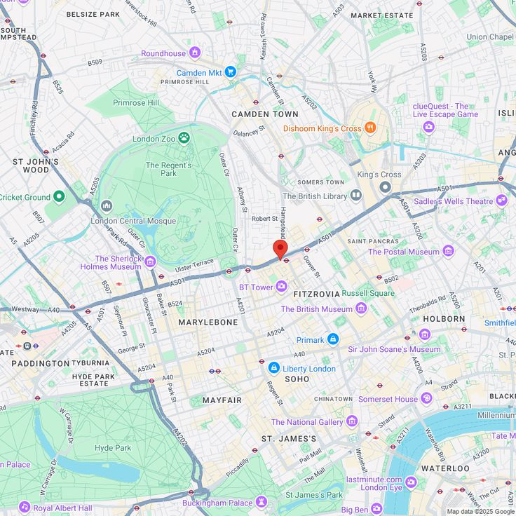

London Bicycle Routes
Routes
About this site
Routes
Regent's Canal Cycle Route
easy
5.5km
Capital Ring
medium
7km
Lee Valley Regional Park Route
easy
3km
Thames Cultural Cycling Tour
hard
27km
Thames Path Cycleway
medium
6km
Richmond Park Loop
hard
15km
